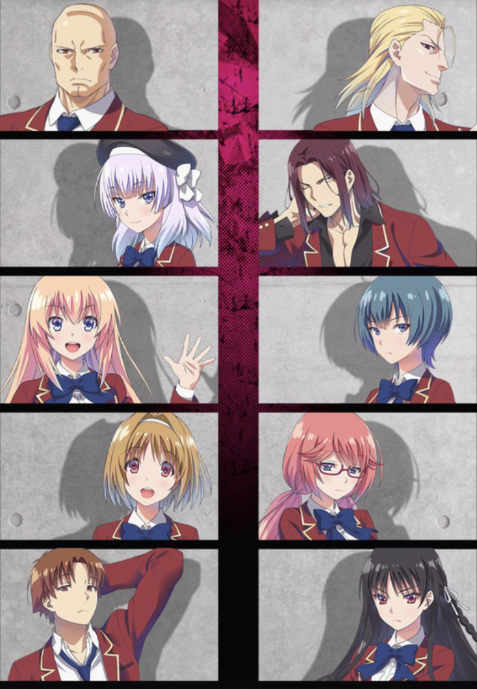

| A | God Tier |
| B | Good Anime |
| C | Eh |
| F | Terrible |
| I | Did not finish watching |
The grade I is not to be confused with a negative rating; it is neutral on its own and can be given by itself or in combination with another letter grade depending on the level of completion. Anime with only the grade I cannot accurately be placed within the letter grade scale, so they are at the bottom of the list.
Grades may further be divided with a + or - indicating the relative rating of that anime within its letter group. This will also be reflected in the position of the anime in the list. If an anime has the exact same rating as another, it can be assumed that the one lower in the list was not enjoyed more than the one above it.
Anime given a rating of A or higher will also be rated on two further categories: romance and humor. These ratings will be a score out of 5, represented by stars. Humor in this case is not necessarily a measure of the funniness of the show. Rather, it indicates the level of lightheartedness (“fuzake”) compared to the amount of seriousness.
These rankings are totally my own opinion influenced by my own bias. My favorite genres are romance, comedy, and sports, and my least liked genres are isekai/fantasy and suspense/horror. I am not open to criticism.
| Image | Grade | Title & Notes |
|---|---|---|
| A+
Humor: ★★★★☆ Romance: ★☆☆☆☆ |
ハイキュー!! Haikyuu!! Short boy dreams of becoming a great volleyball player, then makes this into reality when he meets a great team with a particularly great setter. I’ve rewatched this so many times the high ranking is probably a little sentimental. |
|

|
A+
Humor: ★★★★★ Romance: ★★★★★ |
ヲタクに恋は難しい Wotakoi (wotaku ni koi wa muzukashii) Childhood friends unexpectedly meet again at a new workplace and fall in love, partially due to their shared identity as otaku. Green hair and orange hair are also an otaku couple, but they have a love-hate relationship that is very entertaining. All three love arcs in this anime are quality. |

|
A
Humor: ★★★★★ Romance: ★☆☆☆☆ |
銀の匙 Silver Spoon Boy from Tokyo is book smart but has no ambition in life. He gets sent to a rural af farming boarding school where he has to get used to the unexpectedly difficult world outside of the classroom. Subtle nuances of romance but overall wholesome anime about a depressed burnout gifted kid finding friends and fun in the countryside. |
| A
Humor: ★★★★★ Romance: ★★★☆☆ |
月刊少女野崎くん Monthly Girls' Nozaki Kun Girl tries to confess to her crush, he thinks that she’s asking for his autograph because he is actually a very famous manga writer (although nobody at school knows). She becomes his assistant in hopes that she can get closer to him and make him realize her feelings. He is dumb and blind and is always looking for inspiration for his manga. |
|

|
A
Humor: ★★★★★ Romance: ★★★☆☆ |
桜蘭高校ホスト部 Ouran High School Host Club Protagonist becomes a popular host at her high school host club but she is hiding her real gender and the fact that she is there to repay debt of a broken vase. The blonde man is wildly in love with her but doesn’t realize because he is stupid. All the other hosts are charming and quirky in their own way. Each episode is so ridiculous it keeps you on your toes. |

|
A
Humor: ☆☆☆☆☆ Romance: ☆☆☆☆☆ |
進撃の巨人 Attack on Titan Humanity fights titans. Nice story. Very binge worthy. When will they actually end the anime. |

|
A
Humor: ★★★★★ Romance: ★★★★★ |
私がモテてどうすんだ Kiss Him Not Me Chubby girl (who is obsessed with BL manga) loses weight due to extreme shock from her favorite characters’ death. Five hot people fight over her. Kind of like Ouran but everyone is fighting for the girl. Super lighthearted and funny, comedic changes in animation style, pretty solid subtitles. |

|
A
Humor: ★★★★★ Romance: ☆☆☆☆☆ |
聖☆おにいさん Saint Young Men Jesus and Buddha live together in modern day Tokyo. Comedy and Slice of life, subtitles suck because some things in this anime are really hard to translate without cultural context. Movie length. The manga might be better for English speakers. |

|
A
Humor: ★★★★★ Romance: ★★★★★ |
俺物語!! Ore Monogatari!! Big high school boy saves a little high school girl from a creepy dude on the train and then falls in love with her. They are both very awkward and inexperienced, and he thinks that she likes his best friend at first, but they figure it out. Very cute. |

|
A
Humor: ★★★☆☆ Romance: ★★☆☆☆ |
ユーリ!!! On ICE Yuri on Ice Yuri wants to be a better ice skater, but he kind of sucks. Victor flies all the way from Russia to become his personal coach and whips him into shape. Gay. |

|
A- | 頭文字D(イニシャルD) Initial D Unassuming dumb looking young man is literally the fastest street racer alive other than his old man. Old anime but classic for a reason. To be honest this anime is partially ranked this high for sentimental reasons, can be slow at times but is still a really good show. |

|
B+ | ホリミヤ Horimiya Shy introverted boy turns out to be very cool with piercings and tats, falls in love with the girl in the middle. Everyone falls in love with someone. Nice school love story. |

|
B+ | ひげを剃る。そして女子高生を拾う。 Hige wo soru. Soshite jyoshikousei wo hirou. Working salaryman finds a random runaway teenage girl and lets her live at his house while she figures things out. Surprisingly wholesome even with the sad back story of the girl. Is this a romance anime? He’s more of a father/big brother figure. I cried. |

|
B+ | 四月は君の嘘 Your Lie in April Bold girl with chronic illness pulls the shy piano boy out of his shell. Tbh I don’t remember the ending even though I’ve watched this multiple times but I think she dies. I remember I cried a lot. |

|
B | 弱虫ペダル Yowamushi Pedal Otaku boy turns out to be really good at cycling. Wholesome sports anime, good characters, good plots, feel-good, really really gross side character that I hate but you can skip those parts (although he does show up a lot). Very satisfying to watch, lots of humor. Binge-worthy |

|
B | ソーダのように言葉が湧き上がる Words Bubble Up Like Soda Pop Super cute movie about a social media influencer who is insecure about her bunny teeth and a super shy boy who writes haiku. They look for a record together and stuff. The animation colors are super vibrant and refreshing. |

|
B | Free!
Hot men. good youth. What a lovely time. TBH I don’t remember the plot. I assume they swim. I remember it was great. I rewatched it like twice. |

|
B | 古見さんは、コミュ症です。 Komi Can't Communicate Komi has a hard time speaking to other people because of her social anxiety/ communication disorder, but she has a goal to make 100 friends. She slowly accomplishes this goal by befriending very quirky people at her school. Very wholesome, very humorous - the anime takes the lighthearted route rather than a serious one. |

|
B | Orange
I remember really liking this anime but it wasn’t memorable enough for me to remember. I think someone dies. Oh yeah I just looked up the plot and it’s the one where they get letters from themselves in the future asking them to save their friend from suicide. |
| B, I | かぐや様は告らせたい ～天才たちの恋愛頭脳戦～ Love is War Two elite students like each other but will rather literally die than confess their love because one person is always inferior in a relationship and that person is the one that confesses. Super good anime, I have to finish watching it |
|

|
B | 賭ケグルイ Kakegurui Lots of gambling, lots of erotic references and drool, black haired heroine transfers into gambling school and is super good at gambling so she stirs things up at the school. Pretty good anime. I enjoyed it. |

|
B | 天気の子 Weathering With You Girl can control the weather, they fall in love. Good movie. |

|
B | デスノート Death Note Super smart dude somehow gets a notebook that kills anyone whose names are written down in it. Another super smart dude tries to catch him. It was a pretty good plot but I don’t think I would rewatch. |

|
B | ゴールデンタイム Golden Time Guy gets amnesia at end of high school and goes to college with no memories. Meets new friends, makes a girlfriend, but memories fleet back sometimes - but new and old self can’t coexist, and he realizes that his new self will soon be erased. A little lacking in humor for my taste, it’s a pretty serious story. |
| B | 斉木楠雄のΨ難 The Disastrous Life of Saiki K. Saiki navigates his life with his supernatural and quite frankly unfairly strong powers surrounded by idiots. No overarching storyline, just individual episodes, so very low commitment. Filled with dry sarcasm from Saiki. Pretty funny. Subtitles kind of suck. |
|
| B | 坂本ですが？ Haven't You Heard? I'm Sakamoto Same type of show as Saiki K. Pretty good for a background show. It’s just Sakamoto being cool af. |
|
| B | 黒子のバスケ Kuroko's Basketball The main character is a good basketball player because he is so unremarkable that players don’t see him on the court. He is on a mission to beat all of his former teammates, who are all god-level. The plot is repetitive but it’s a solid show. Muscular arms. |
|
|  | B | ようこそ実力至上主義の教室へ Classroom of the Elite Super smart students are divided into classes from A to D and these classes are ranked based on the class’s whole performance. The main dude is smart af and was bred in some sort of facility or something but he always lays low and makes sure to perform the average. He helps his class perform well in various tests but never takes the credit. But he seems to have an ulterior motive. |
| B | 君の膵臓をたべたい I Want to Eat Your Pancreas Girl with terminal illness befriends an antisocial guy and does things on her bucket list with him… can’t say any more without spoiling it Pretty good movie I guess but there’s like zero comedy so make sure you’re in a serious mood |
|

|
B | 恋は雨上がりのように After the Rain high school girl is in love with her boss who is 45. Kinda wholesome I guess? But it had more comedy potential that wasn’t fulfilled, also kinda weird how the boss isn’t an adult enough to completely deny her fantasies. |
| B | 天空侵犯 High-Rise Invasion Pretty solid plot but it’s kind of scary to watch by yourself haha lots of gore tbh oh yeah it’s the netflix show where the people are dropped off on the roofs of buildings or whatever and then they have to run away from the masked people. |
|

|
B | 約束のネバーランド The Promised Neverland Kids in orphanage are fed to monsters. They find this out so they try to escape. Pretty good anime, pretty gory, wouldn’t rewatch but would watch season 2 Ok jk I got info that season 2 is not interesting |

|
B | Erased
Boy rescues girl from abusive home situation and the teacher is the bad guy for some reason. TBH don’t remember the plot too well but it was pretty good |

|
B | Banana Fish
Japanese photographer boy gets caught up in american gang violence Good plot i guess… did not like the ending. |
| B- | 政宗くんのリベンジ Masamune Kun No Revenge A formerly chubby guy gets hot and plots revenge on the girl that broke his heart by getting her to fall in love with him so that he can dump her. It was okay I guess. I don’t like seeing women fight over a mediocre man. Also there needs to be an actual ending where she figures out everything… Would rate higher if they come out with season 2 that has an actual ending. |
|

|
B- | ましろのおと Mashiro No Oto A boy who plays shamisen goes out and plays shamisen… only watched two episodes, is probably a really good story but it’s pretty serious so I’m not entirely that interested. |

|
B- | ノラガミ Noragami A pretty low rank god meets a girl and they fight monsters together. A boy turns into a sword. Funny at times but overall a pretty serious storyline, not my personal favorite since it’s very action/serious/fantasy |

|
B- | 好きっていいなよ Say "I Love You" Shy girl and popular guy fall in love. I don’t really remember anything else. Would probably rank higher if I rewatch it but I’m not a real fan of the animation style. |

|
B- | 極主夫道 The Way of the Househusband I loved the manga but the anime wasn’t great, the animation style was really leaning to a manga reading experience rather than a smooth anime and it was a little too simple. But anyways it’s an ex-yakuza member who is now a loving stay-at-home househusband (I don’t think he has a kid yet but I don’t remember). Would recommend the manga but not really the anime. |

|
B-, I | とらドラ！ Toradora Small feisty girl is enemies with mean face but kind hearted boy but then they grow closer and fall in love probably idk. I’ve started this one a couple of times but never finished it |

|
B-, I | ３月のライオン March Comes In Like a Lion Shogi whiz gets taken in by a nice girl and her nice mom and little sister. I don’t think I finished the anime bc it’s a slow and wholesome one |
| C, I | うらみちお兄さん Uramichi Oniisan Self deprecating and depressed man is one of the hosts for a kids show. Lots of sarcasm and depressing adult jokes, kind of a background show. |
|

|
C | 食撃のソーマ Food Wars There’s a good plot but there’s so much erotic things going on. The boobs are big and while I enjoy big boobs these boobs are too distracting and unnecessary. But the plot is pretty good, the son of some restaurant owner makes his way up the ranks of a culinary school. |

|
C, I | はたらく細胞!! Cells at Work! Personified version of human body cells, systems, functions. Caters to a very niche audience and I don’t think I am a part of that audience. Good for all you pre meds out there |
| C, I | 青春ブタ野郎はバニーガール先輩の夢を見ない
Rascal Does Not Dream of Bunny Girl Senpai I don’t think I’ve actually finished watching it, I’ve tried a couple of times but it was pretty boring I think. |
|

|
C, I | 七つの大罪
Seven Deadly Sins Don’t see the hype. I guess it could be entertaining for kids but there’s big boobs everywhere. Kinda forgot the plot. |
| C, I | 会長はメイド様！
Kaicho Wa Maid Sama! Didn’t finish watching it but it was a basic romance drama I think. Probably won’t finish watching it. |
|

|
F, I | Great Teacher Onizuka
This anime is old and you can really tell. He’s a teacher and kinda pervy |

|
F, I | ソードアート オンライン
Sword Art Online I didn’t finish watching but… I’m not that eager to finish watching it … I watched the first couple of episodes but it wasn’t great. Was it some kind of VR game world? I heard the later seasons are better but I’m not even interested. |

|
I | 見える子ちゃん
Mieruko Chan COULD NOT FINISH WATCHING! TOO SCARY The first scene was something CRAWLING OUT OF THE FRIDGE no thank you :) |

|
I | イジらないで、長瀞さん
Ijiranaide, Nagatoro-san The girls were too annoying so I didn’t finish watching the first episode. Gyaru type |

|
I | 犬夜叉
Inuyasha Cute comfort show Group of hooligans defeat monsters |